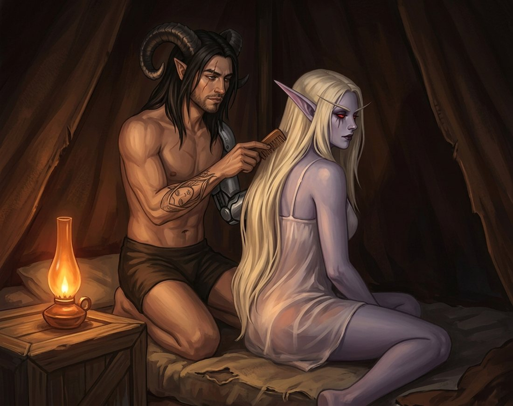

Capítulo Dezenove
O pente
Nathan chegou por último, como sempre chegava agora.
Era uma coisa que tinha se estabelecido sem combinação: ele fazia a última volta pelo perímetro, conferia as duas saídas do abrigo, olhava a rota do norte por alguns minutos e só então entrava. Sylvanas percebeu no primeiro mês e nunca comentou — porque entendia perfeitamente. Ela também tinha manias que não eram negociáveis.
Ele soltou a aba da tenda atrás de si.
E parou.
Sylvanas estava sentada na esteira, de costas para a entrada, com a lamparina de óleo acesa no caixote ao lado. Estava com aquele vestido curto e claro que Elyra carregava havia oitenta anos sem motivo nenhum e que agora tinha o motivo mais óbvio do mundo: um tecido leve, de alças finas, meio translúcido, que a luz alaranjada atravessava sem pedir licença e desenhava por baixo a linha inteira dela.
O cabelo prateado estava solto, caindo pelas costas até bem abaixo da cintura.
Ela estava penteando.
Devagar, com um pente de madeira que Nathan reconheceu porque tinha sido ele quem o fizera, dois meses antes, de um pedaço de raiz fóssil, sem dizer para que era. Ela nunca agradeceu em palavras. Simplesmente passou a usar.
Nathan ficou parado na entrada.
Não por hesitação — havia semanas que a hesitação tinha acabado entre os dois —, mas porque aquilo era uma daquelas coisas que ele não sabia que queria ver até estar vendo.
— Você está me olhando — disse Sylvanas, sem se virar.
— Estou.
— Há quanto tempo?
— Uns vinte segundos.
— Foram trinta e um.
Ele riu baixo e atravessou a tenda.
✦
Soltou o cinto, tirou o sobretudo escuro sem mangas, pendurou. Destravou o encaixe da prótese e apoiou o braço de metal no pano dobrado ao lado da esteira — perto o bastante para alcançar dormindo, coisa que ele nunca ia perder e que ela nunca ia comentar. Ficou só com o short curto de couro macio, os chifres expostos, o ombro esquerdo marcado onde o encaixe apertava.
Depois ajoelhou-se atrás dela.
Sylvanas parou o pente no meio de um movimento. Não se virou. Só parou.
— Me deixa fazer isso? — perguntou Nathan.
Foi um silêncio curto, mas durou o suficiente para ele entender o tamanho da pergunta.
Porque não era sobre o cabelo.
Era sobre deixar alguém ficar atrás dela. Alguém com as mãos no lugar onde ela não enxergava. Uma banshee que atravessou dois séculos calculando ângulos de ataque, que se sentava sempre de costas para a parede, que ainda dormia com o arco a um braço de distância.
— Deixo — disse ela.
E entregou o pente para trás, por cima do ombro, sem olhar.
✦
Nathan pegou com a mão direita — a única que servia para aquilo, e ele já tinha parado de se irritar com isso havia muito tempo.
Começou pelas pontas, porque sabia que se começasse por cima ia puxar. Segurava a mecha no meio com os dedos e desembaraçava abaixo, um pouco de cada vez, com uma paciência que teria surpreendido qualquer pessoa que só o conhecesse em combate.
O cabelo dela era mais pesado do que ele imaginava. E mais frio.
Sylvanas não disse nada por muito tempo.
Aos poucos, os ombros dela desceram. Foi quase imperceptível — dois, três centímetros —, mas Nathan percebeu, porque ele percebia tudo nela, e sentiu uma coisa absurda apertar no peito, porque em dois anos e meio nunca a tinha visto largar o peso daquele jeito.
— Minha mãe fazia isso — disse ela, de repente.
Nathan não parou o movimento.
— É?
— Comigo e com as minhas irmãs. Em fila. — A voz estava baixa, quase distraída. — Alleria reclamava. Vereesa dormia sentada. Eu fingia que achava aquilo desnecessário.
— E achava?
— Não. — Uma pausa. — Eu era a que chegava primeiro na fila.
Ele sorriu para a nuca dela.
— Isso combina desconfortavelmente com você.
— Não conte a ninguém.
— Varokh pagaria bem por essa informação.
— Varokh receberia uma flecha.
✦
Ele continuou.
Foi ficando mais fácil conforme subia — os nós já desfeitos abaixo, o pente correndo limpo — e em algum momento aquilo deixou de ser tarefa e virou outra coisa. Ele passava o pente, depois passava a mão atrás para alisar, depois o pente de novo. Não era eficiente. Ele não estava tentando ser eficiente.
Em algum momento ela virou o rosto de lado, o suficiente para ele ver o perfil: a pele azul-acinzentada, as marcas escuras sob os olhos que ela nunca tinha perdido, e as duas brasas vermelhas semicerradas, olhando para nada.

— Você fez o pente — disse Sylvanas.
— Fiz.
— Nunca disse.
— Você nunca perguntou.
— Eu soube no primeiro dia. — Ela inclinou levemente a cabeça, acompanhando o movimento da mão dele. — Tem a marca da sua lima na base. Você lima sempre no mesmo ângulo.
Nathan parou por um segundo.
— Você reconhece a minha lima.
— Eu reconheço tudo o que é seu — disse Sylvanas. — Foi assim que eu te encontrei.
Ele não teve absolutamente nada para responder a isso.
Continuou penteando mais um tempo, em silêncio, e quando terminou — quando o pente correu do alto até as pontas sem encontrar nada — não o largou imediatamente.
Ficou parado com o cabelo dela na mão.
— Acabou — disse.
— Eu sei.
Ela não se levantou.
Não se virou. Não fez nada.
E naquela imobilidade havia uma coisa muito clara, dita sem uma única palavra, do jeito exato que os dois sempre conversaram: eu não vou embora.
✦
Nathan colocou o pente no chão.
Depois levou a mão direita ao ombro dela.
Devagar. Sem surpresa nenhuma — ele nunca a alcançava por trás sem que ela ouvisse, nunca, era uma regra que jamais precisou ser dita — e ela sentiu a mão chegar e não se moveu.
A palma cobriu o ombro inteiro, quente contra a pele fria, os dedos por cima da alça fina do tecido.
Depois ele buscou a esquerda.
Encaixou a prótese em silêncio, sem pressa, e Sylvanas esperou — e havia alguma coisa nessa espera que era mais íntima do que tudo o que veio depois, porque ela sabia exatamente quanto tempo aquilo levava e nunca, em nenhuma noite, tinha demonstrado impaciência.
A mão de metal pousou no outro ombro.
Fria de um jeito diferente — fria de coisa, não de corpo —, e ele encostou com muito mais cuidado, como sempre encostava, com aquele receio pequeno e permanente de pesar demais em alguma coisa dela.
Sylvanas fechou os olhos.
Não recuou. Não virou o rosto. Não fez uma única das coisas que uma mulher que passou dois séculos sem baixar a guarda faria.
Ao contrário: inclinou a cabeça para o lado.
Descobriu o pescoço.
Foi o gesto mais deliberado que ela fez em toda aquela noite, e Nathan entendeu exatamente o que significava, porque ela nunca dizia essas coisas com a boca.
— Tem certeza? — perguntou ele, mesmo assim.
— Nathan.
— Só estou perguntando.
— Eu sei por que você pergunta. — A voz estava mais baixa que o normal, e havia nela algo raro: nenhuma armadura. — E a resposta é sim. Foi sim desde que eu entrei nesta tenda.
✦
Ele se inclinou e beijou o pescoço dela.
Foi na curva onde o ombro encontra a garganta, e ela respirou fundo uma vez — um som pequeno, quase nada, e absolutamente devastador para quem passou dois anos e meio aprendendo a ler cada silêncio daquela mulher.
Beijou de novo, mais acima. Depois atrás da orelha longa, subindo devagar, sem pressa nenhuma, com a mesma paciência obstinada de quem passou um ano inteiro consertando a mesma peça até ela funcionar.
Sylvanas levou a mão para trás e a fechou na nuca dele, entre o cabelo e a base de um dos chifres.
Não puxou. Só segurou.
E as mãos dele desceram.
A direita primeiro, deslizando do ombro pelo braço; o metal da esquerda logo atrás. Ele achou as alças finas quase sem procurar, porque não estava procurando nada — as mãos foram sozinhas, do jeito que as coisas acontecem quando duas pessoas já não têm mais nada a negociar uma com a outra.
Os dedos passaram por baixo do tecido.
Ele parou por um instante — o último instante, aquele em que ela poderia dizer qualquer coisa —
e Sylvanas apertou a mão na nuca dele.
Uma vez.
As alças desceram pelos ombros. Pelos braços.
E o vestido claro escorregou e caiu no chão da tenda, junto ao pente de raiz fóssil, e ficou lá.
✦
A lamparina queimou até quase apagar sozinha.
Depois apagou.
E o resto da noite pertenceu inteiramente aos dois, e a Gorja lá fora continuou exatamente igual — cinzenta, morta, indiferente, sem manhã nenhuma para oferecer —, e pela primeira vez em muito tempo isso não teve a menor importância para nenhum deles.
✦
Muito depois, no escuro, Sylvanas falou:
— Você deixou o pente cair.
— Eu estava ocupado.
— Ele é bom. Não quebre.
— Eu faço outro.
— Eu não quero outro — disse ela.
Nathan virou a cabeça no escuro.
— Você percebe que acabou de dizer uma coisa muito sentimental.
— Eu disse uma coisa prática. Aquele já está no formato do meu cabelo.
— Sylvanas.
— Durma, Nathan.
Ele riu contra o cabelo dela e não insistiu.
Dormiu oito horas seguidas.
E às três da madrugada, quando uma pedra assentou a quinze metros do abrigo, ele não acordou — e Sylvanas, que acordou, ficou olhando o teto de couro por um tempo longo, com o braço de metal apoiado na cintura dela, entendendo perfeitamente o tamanho daquilo.
Ele não tinha acordado.
Ela deixou que ele continuasse dormindo.